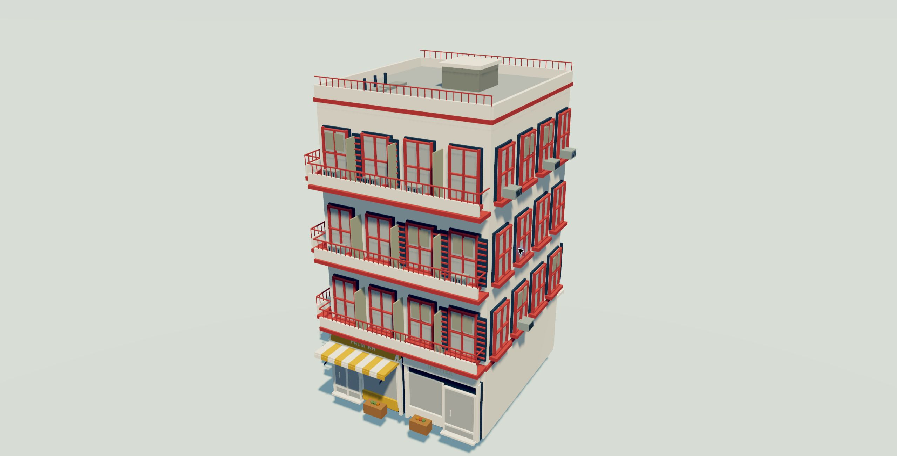
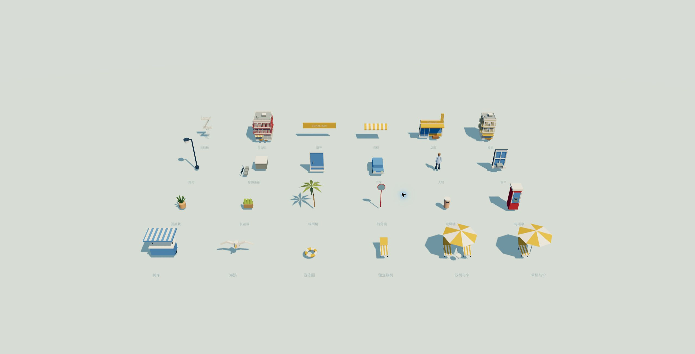

已检查
相同参数与种子复现生成数据；高密度包含低密度候选；主题切换保留建筑布局；无效尺寸范围被拒绝。
AI 全栈工具开发 · 人主导设计，AI 实现与迭代
基于模块语法与空间约束的程序化街区设计
本项目探索如何把可识别的建筑语言转化为可控制的生成规则：从门窗与店面变体出发，逐层组织立面、楼栋与街区，再加入海滨公共空间。重点是协调局部差异、整体秩序与交互控制，而不只是增加随机数量。
开发方式：我负责参考解读、规则设定、视觉判断与验收；AI 负责将要求落实为 HDA、网页生成逻辑、界面和测试代码。我通过持续观察结果、提出具体修正并检查边界条件，主导工具从原型到可交互版本的迭代。

最初的参考展示了多个楼栋与店面样本，但展示格并不等同于独立组件。同一店面可以通过雨棚、横招牌、竖招牌及小物件组合产生不同外观；楼栋则是这些组合的更高层容器。由此，组件库需要描述“如何组合”，而不只是“有哪些模型”。
早期结果暴露出三类问题：进深和排列过于一致，局部细节虽然随机却缺少整体层级，以及参数过多导致难以快速控制场景规模。后续设计分别从尺寸范围、分层组合和宏观参数映射三个方面处理。
门、窗、雨棚、招牌
开间与铺面组合
楼层、楼型与附属设施
地块、道路与公共空间

建筑先确定占地、层数与楼型，再按楼层和开间组织立面。传统消防梯楼与连续阳台公寓共用门窗、铺面等部件，但通过附属结构形成不同轮廓。
门型包含单门、双玻璃门和卷帘门；窗户包含矩形与拱形等变体。雨棚、悬挂招牌、竖招牌在店面层继续抽样。各组件不是无条件叠加，而是在对应位置与尺寸中组装。

布局采用不规则分区或错落街巷。楼栋宽度、进深、间距、临街退距和层数分别在有效范围内抽样；道路与地块边界限制可用空间，空置概率用于形成疏密变化。建筑不再共享统一进深或整齐的行列。
总种子之下，布局、立面和道具使用分支种子。这样可以在街区模式下保留建筑占地，单独尝试立面变化。分支不是绝对隔离：占地改变会影响立面开间，道具种子也参与部分屋顶设施的抽样。
| 控制层 | 主要作用 | 设计意图 |
|---|---|---|
| 街区大小 / 密度 | 场地宽深、分区目标、内街宽度 | 先确定场景容量与空间节奏 |
| 楼栋大小 / 密度 | 占地范围、间距与空置率 | 控制体量与填充程度 |
| 楼高范围 | 每栋楼的层数抽样 | 独立控制天际线变化 |
| 局部分支种子 | 布局、立面、道具抽样 | 支持定向迭代与复现 |
街道生活的可信度不仅取决于物件种类，还取决于它们出现在哪里。候选位置由空间规则产生，概率控制候选是否启用；同一组候选可用于不同密度，减少调整时已有物件整体跳位。
| 对象 | 约束与边界条件 | 结果 |
|---|---|---|
| 临街铺面 | 两侧符合条件的铺面位置分别抽样；概率 1 时全部启用 | 避免“拉满仍然稀少”的不直观行为 |
| 电话亭 | 每个地块组最多一个；密度 1 时每组一个 | 形成稀疏的公共设施节点 |
| 转角镜 | 只使用转角候选位置 | 物件位置对应空间功能 |
| 人物、车辆与装饰 | 保留间距；车辆方向沿道路，避让占用区域 | 降低穿插与无意义的整排重复 |
| 沙滩椅伞组合 | 单椅配伞 / 双椅配伞 / 单椅无伞，附加位置避让 | 在局部聚组中保留分布变化 |
沙滩与海洋的尺寸随场地变化并限制在一定范围内，不额外暴露一组规模参数。海岸使用独立随机分支，人物和装饰匹配沙面高度。海水采用轻量动画，服务于整体氛围，不进行流体模拟。
建筑与装饰使用不同色板。建筑以整栋为单位维持主色关系，装饰承担更醒目的红黄点缀；人物同时保留深浅衣服，避免人物成为重复的高饱和色块。
两套主题共用布局与几何。“夏日奶油”采用柔和彩墙和米白框架；“美式复古”反转为暖白墙和彩色框架。配色比较固定种子与取景，因此可以观察视觉层级变化，而不是比较两座不同的小镇。
Houdini 阶段用于规则探索与 HDA 交付；网页以 JavaScript 实现对应的生成思路，两端不是自动同步工程。浏览器端由 Worker 计算生成数据，再以实例化方式复用基础几何；参数输入使用 180ms 防抖。
现有 13 项自动测试检查复现性、有限数值、占地不重叠、铺面概率端点、特殊装饰位置、海岸范围以及主题隔离等行为。占地测试覆盖两种布局和十个种子；这些检查验证特定条件，不等同于穷尽所有组合。
项目还提供 HDA 版本，可通过 Houdini Engine 在支持的引擎中使用。生成结果支持转换或烘焙为网格；重复模型采用实例化复用，以减少相同几何的重复存储。引擎端需要安装匹配版本的 Houdini Engine 插件，并按输出方式进行烘焙或实例处理。
HDA 与浏览器版本是两套交付：前者面向引擎内的资产使用，后者面向即时交互与设计预览；网页端实例化绘制不等同于引擎端的实例输出。
相同参数与种子复现生成数据；高密度包含低密度候选；主题切换保留建筑布局；无效尺寸范围被拒绝。
界面中的毫秒数仅表示规则生成耗时，不是完整加载耗时或帧率。实例化减少重复绘制成本，但复杂度、阴影和设备仍然影响实际体验。
可以继续扩展楼型语法，增加多种子视觉回归，并系统测量不同规模与设备下的加载和渲染开销。以上是后续方向，尚未作为完成结果。
与 AI 的沟通以“参考 → 规则 → 结果 → 修正”为循环。我没有只给一个风格词就接受成品，而是逐层澄清组件关系、空间行为和视觉取舍，让每轮反馈都能对应到可修改、可检查的对象。
我指出参考中的十二个展示格并非十二种独立组件：两个店面样本可能来自同一个组合器，楼栋也应随机组合下级模块。这改变了组件库的组织方式。
“随机性不够”被拆解为楼栋宽深浮动、不规则分区和门窗变体；“铺面拉满还是少”被明确为概率为 1 时，符合条件的两侧临街位置都应生成铺面。
我用截图圈出残留纹理和不合适的构件颜色，分开调整建筑、装饰、海水、植被与人物配色；再决定移除笔触、降低雾感、冷却环境补光。配色迭代保持同一几何，便于判断改动本身。
当调整规模需要翻找大量参数时，我提出四个整体控制；发现自动取景掩盖场景大小变化后，要求街区使用固定视角尺度。AI 据此调整参数映射和相机行为，再由我检查结果。
我明确电话亭每区最多一个、转角镜只能出现在转角等规则；AI 将相应条件落实为实现和测试，并维护规则与参数文档。测试用于检查约束，最终的画面节奏与审美判断仍由我负责。
换一种配色，试一个新的种子，让海岸工坊生成你的夏日风景。